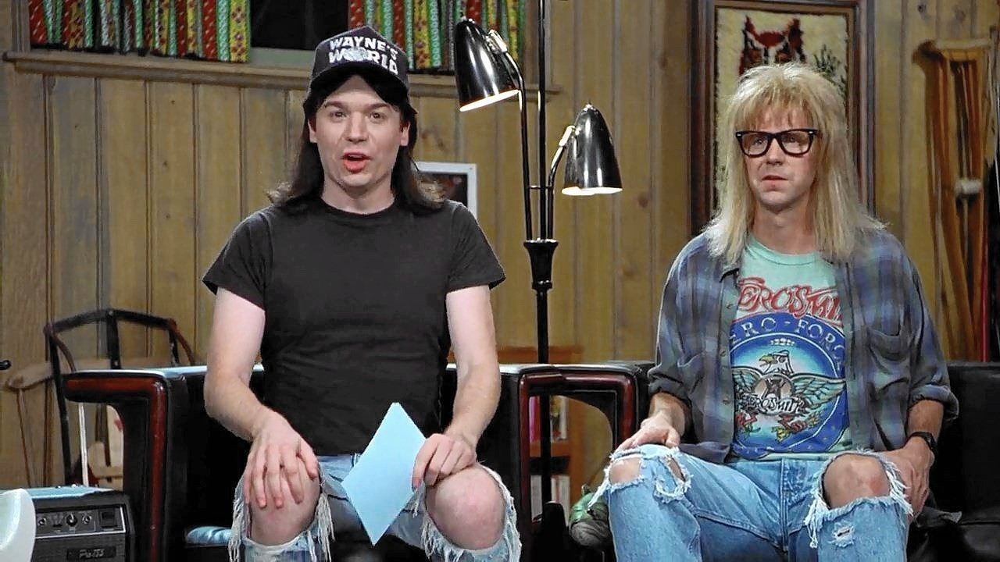

Wayne Campbell is a heavy metal fanatic living in a suburban Chicago neighborhood. On a Friday Night, Wayne and his eccentric best friend, Garth Algar hosts "Wayne's World", a public cable network TV show in Wayne's basement and is very popular. "Wayne's World" catches the attention of handsome TV network executive Ben Oliver who wants "Wayne's World" on his television network in downtown Chicago and sponsored by billionaire Noah Vandahoff, one of the largest owners in the arcade business. With "Wayne's World" now on a Prime Time TV network, Wayne and Garth find themselves moving up big time and Wayne finds himself falling in love with Cassandra Wong, a Chinese-American lead singer of a heavy metal band. But Ben has a hidden agenda and plans on ruining their show and he bids to steal Cassandra from Wayne if Wayne and Garth do not make a success in making "Wayne's World" #1 in the TV ratings. Wayne and Garth finds the show isn't the same and Wayne plans to help Cassandra make it big time with her career.
- 